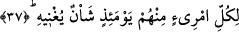

olduklarını; kıyamet günü başlarına gelen sıkıntılar ve kötü durumlar sebebiyle Allah
karşısında çarelerinin olmadığını gördüğünde onlardan kaçacaktır. Eğer insanoğlu
onların bu âcizliklerini daha dünyada iken görebilseydi Rabbinden başka hiç kimseye
dayanmaz, güvenmezdi. O Rab ki onu hiç bir şey âciz bırakamaz. Evet insan, yalnızca
O’na dayanıp güvenirdi, alabildiğine O’na tevekkül ederdi, böylece her şeyi O’na
havale etmenin serinletici ve dinlendirici gölgesinde istirâhate çekilirdi.
Bu âyette kalp kişisinin sırr kardeşinden, nefs annesinden, ruh babasından, beşerî
kuvvetler eşinden, a’mâl ve ahvâl çocuklarından kaçacağına işâret vardır. Çünkü o gün
hiç kimse kendi ameliyle kurtulacak değildir. Tam tersine kurtulan Allah’ın ihsan ve
inâyeti sâyesinde kurtulacaktır. Nitekim Peygamber Efendimiz (s.a.): “Sizden hiçbiriniz
kendi ameli ile Cennete giremeyecektir” dediğinde bunu duyan sahabeler; “Sizde mi ey
Allah’ın Rasûlü” diye sorarlar. Bunun üzerine Peygamber (s.a.): “Ben de kurtulamam,
rabbim beni mağfiretine daldırmazsa ben de kendimi kurtaramam” buyurmuştur.[23]
37. O gün herkesin kendine yetip artacak bir derdi vardır.
Bu ifâde kişinin akrabalarından neden dolayı kaçacağını beyân eden bir başlangıç
cümlesidir. Yani insan, o gün akrabalarından karşılaşmış olduğu büyük dehşet ve
korkunç durumdan dolayı kaçacaktır. Çünkü yukarda sayılan herbir kişinin kendisini
meşgul eden bir işi ve bir meşguliyeti olacaktır. Bu iş ve meşguliyet o kadar büyük ve
korkunç olacaktır ki kişinin sâdece ona eğilmesi ve onunla meşgul olması kendine yetip
artacaktır.
İbnu’ş-Şeyh âyette geçen “şe’nun” kelimesini “insanın içini alabildiğine dolduran bir
düşünce” olarak tefsir etmektedir. Onun tefsirine göre âyetin anlamı şudur: O gün
herkesin kendine yetip artacak bir düşüncesi ve derdi vardır. Bu dert kişinin kalbini
dolduracak ve bundan dolayı orada başka bir şeyi düşünecek alan kalmayacaktır.
Böylece kişi, her şeye malik olan bir zengine benzemiş olmaktadır.
Öyle bir gün ki kişi muhabbet ve şefkatine rağmen kendi kardeşinden, onca hakkı ve
hukukuna rağmen annesinden, her şeyiyle merhamet ve yardımını gördüğü babasından
kaçar. Nice vakit birlikte huzur bulduğu eşinden, koruyup kolladığı kendi çocuklarından
uzaklaşır.
Ferîdüddîn Attâr’ın (k.s.) kıyâmette meşguliyet ile ilgili manzum hikâyesi
hakkındadır.
Bir gemi denizde parçalandı
Gemiden yüzeye sâdece bir tahta çıktı
Bir kedi ile bir fare bu tahtanın üstünde kaldı